CS 717 / Practical 1 / Boundary Detection with Sketch Tokens
Boundary detection is a common problem in the image processing. There are several solutions for this case. One of the recent works is called Sketch Tokens algorithm. The author of the Sketch Tokens algorithm paper, respresents a new approach to bouandry detection problem. The algorithm proposes to use human drawn images to gather information about edge behaviors. Then algorithm train itself and applies it to non-trained test images.
In this practical, we use this approach to detect boundaries. We first, use train image to create a random forest. We have human drawn edge detected images. We use these image for training part. Our algorithm learns what kind of edge can be found by which sketch token. Then it create a forest of sketch tokens. Secondly, we detect sketch tokens. We extract these sketch tokens from images. And finally, we apply them to images and get the boundaries.
get_channels.m
14 channels including: 3 LUV color channels, 3 overall gradient magnitude channels and finally 8 oriented gradient magnitudes have been calculated according to the Sketch Tokens paper. We have used a sobel filter to get directional derivatives. Then those derivates are used to calculate gradient magnitude and oriented gradient magnitudes. Each channel is finally filtered by a post-gaussian filter as advised in the original paper.
get_sketch_tokens.m
To get patches from images, we first shuffled the image directory list with 'randperm' to get a better training data. We, then used 20 images with 30k samples to get sketch tokens. We then found grount truth edge values and shuffled their indexes to get rid of abundant patches.
We have implemented feature description detection in this function. Each time a positive sample is captured, 'get_descriptor' is called with the computed daisy structure.
Finally labels list is filled with vl_kmeans output after clustering different sketch tokens together. Each kmeans assignment is incremented by 1 as each sketch token should be larger than 1. Rest of the list is filled with 1s for background regions.
Training a random forest classifier
20 trees are used for forest training. Our precision rates are above 0.95. We got negative rates close to zero at this part. Our true negative rates are close to 1, while true positive rates are fairly low and sometimes close to zero.
detect_sketch_tokens.m
We have used the computing efficient method in this part. With each pixel channels are captured, flattened and stored in a big array of [width*height, CR*CR*14] size. Then 'forestApply' is called once to calculate edge probabilities.
After probabilities are calculated, we first tried 1-ps to calculate edge probabilities but its performance was bad. So we have used another method to sum all probabilities for different trees then reshape pb to be of image size. The method is taken from here@chtran's repository. Finally, probabilities is filtered by a gaussian filter to remove some of the unwanted artifacts.
Results in a table
Left to right: Original image, Canny Baseline Results, Our implementation Results
| 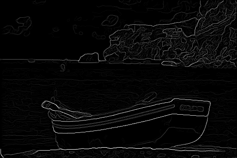 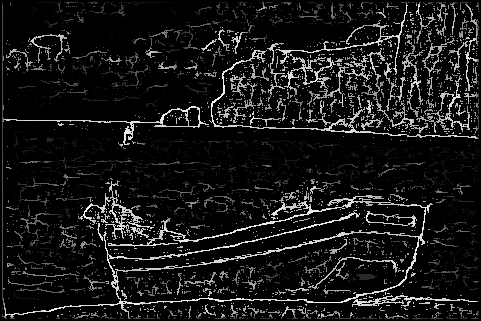 |
 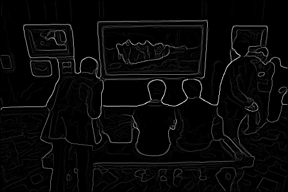
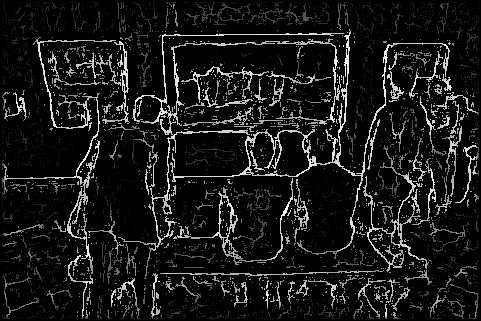
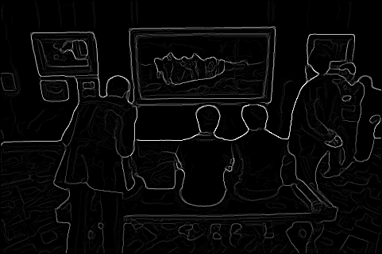
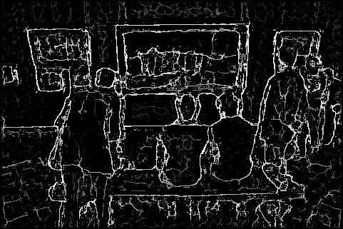
|
 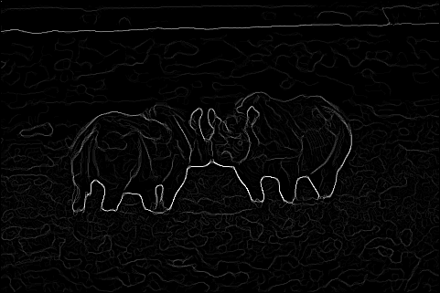
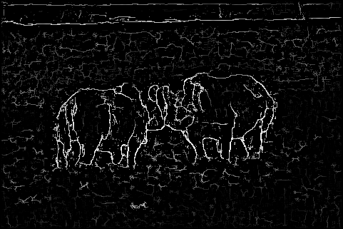
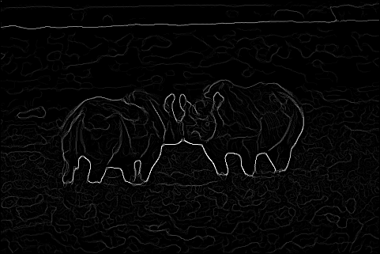
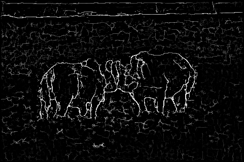
|
| 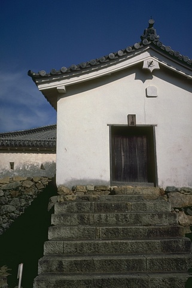 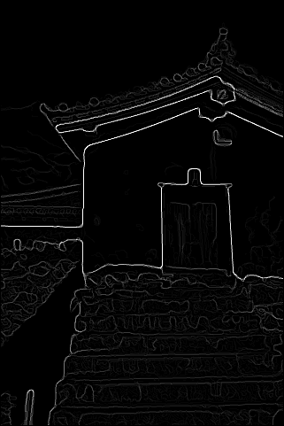 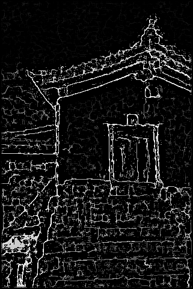 |
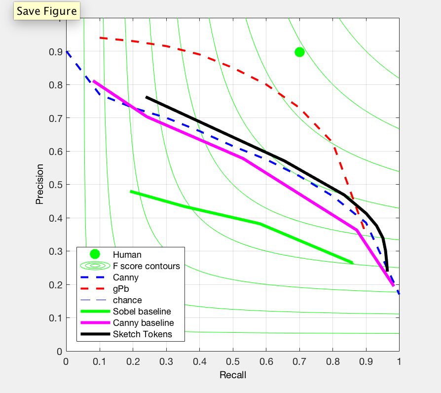
F score of 0.61
We tried to apply sketch token algorithm. Our results detects edges fine but it also detects small components which we do not want. Our goal is to get as close as possible to human drawn images. We find the boundaries but also unwanted parts. As a result, we get F score 0.61.
The performance is suboptimal against what is achievable with this method.